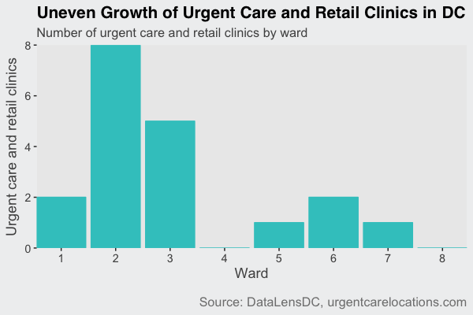
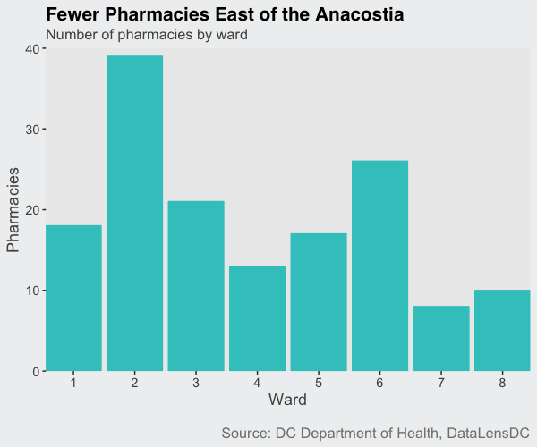
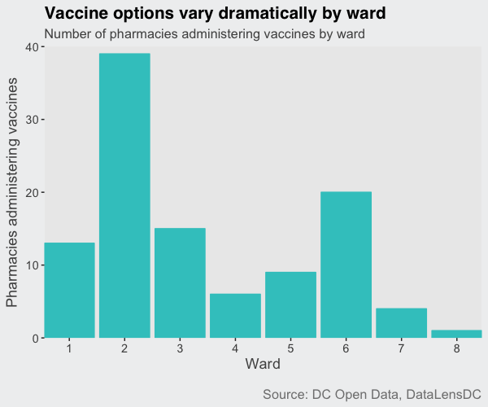

October 4, 2016 // originally published by Greater Greater Washington
With colder weather comes colds. As recently reported by Greater Greater Washington, emergency response times are longer in Wards 7 and 8, located east of the Anacostia. But what about access to non-emergency medical care? Suppose you come down with the flu. Besides chicken soup and bedrest, how will you get better? Where you live in the city may make a difference.
With your flulike symptoms, your first stop may be the clinic. Since 2010 many urgent care clinics, like MedStar PromptCare, and retail clinics, like CVS Minute Clinic, have opened across DC. These walk-in clinics provide immediate care for injuries and illnesses that don't require an emergency room visit, such as your flu-like symptoms, but also infections, sprains, and minor wounds. Retail clinics are staffed by nurses with a more limited range of services, while urgent care clinics have doctors who can provide more complex treatment, like stitches.
No urgent care or retail clinics have opened in Wards 4 or 8 since 2010, and nearly 70% of all DC's clinics are in Wards 2 and 3.

This gap is partially filled by community health centers. Community health centers receive federal funding to provide primary care to underserved populations. One such clinic, Unity Health Care, operates a community health centers in all wards except 2, 3, and 4, with varying degrees of walk-in services.
Once you've been diagnosed by a clinic with the flu, your next trip is probably to the pharmacy. This may be more difficult east of the Anacostia; Wards 7 and 8 have the fewest pharmacies of any ward. Combined, they have a total of 18 pharmacies. This is less than Wards 2, 3, and 6 individually, and equal to the number of pharmacies in Ward 1.

Hopefully you won't get the flu at all because you thought ahead and received a flu shot—and you were able to actually get the shot. Vaccine locations are another area of disparate care across the District.
There are fewer vaccine locations east of the Anacostia, including both Wards 7 and 8, than any other individual Ward.

Technical notes: Pharmacy locations were acquired through a FOIA request to the DC Department of Health. Pharmacies located in hospitals were not included. Vaccine and clinic data came from the DC Open Data portal and www.urgentcarelocations.com. Data was verified via internet searches and phone calls. You can find complete code for this on my github page.